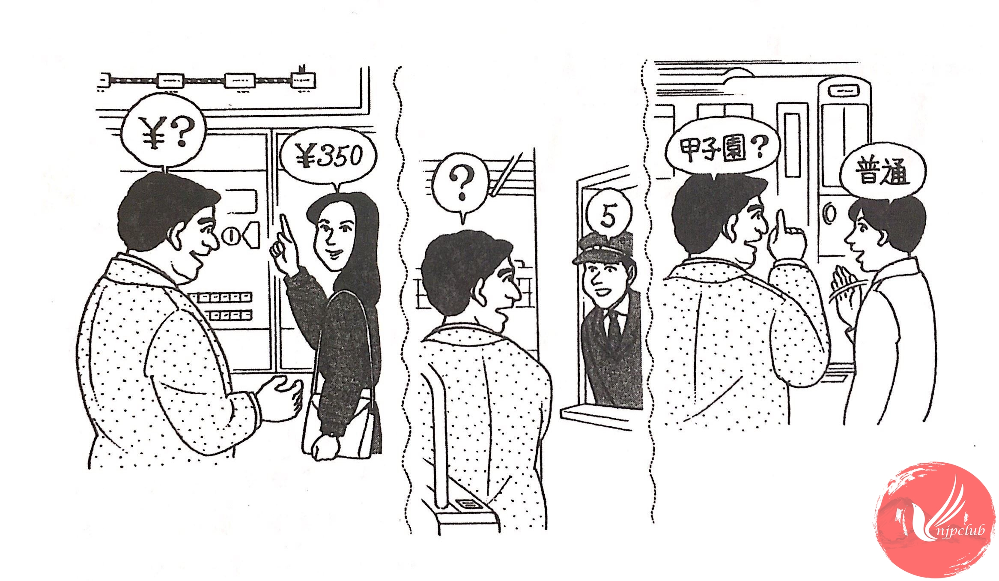

| サントス： |
すみません。甲子園まで いくらですか。 |
| 女の 人： |
350円です。 |
| サントス： |
350円ですね。ありがとう ございました。 |
| 女の 人： |
どう いたしまして。 |
| ‐ ‐ ‐ ‐ ‐ ‐ ‐ ‐ ‐ ‐ ‐ ‐ ‐ ‐ ‐ ‐ | |
| サントス： |
すみません。甲子園は 何番線ですか。 |
| 駅員： |
5番線です。 |
| サントス： |
どうも。 |
| ‐ ‐ ‐ ‐ ‐ ‐ ‐ ‐ ‐ ‐ ‐ ‐ ‐ ‐ ‐ ‐ | |
| サントス： |
あのう、この電車は 甲子園へ 行きますか。 |
| 男の 人： |
いいえ、次の 「普通」ですよ。 |
| サントス： |
そうですか。どうも。 |